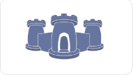

Regarding the Microsoft MVC
To The .Net Community,
You are probably wondering how the recently announced Microsoft MVC project will compete with Castle's MonoRail.
We think that any attempt to offer more productive tools, better testability and better separation of concerns is valuable, no matter who is the author. We are certainly pleased to see that Microsoft is delivering something that allows a more agile and productive type of web software development.
We also believe that MonoRail has been providing the same thing for the past two and half years, and will continue to do so. We're grateful that MS has chosen to offer integration points for Monorail and the Castle stack and as soon as it's available we will be working to integrate it with the rest of our projects.
Is MS' MVC better? Worse? Only once we have used both will we be able to tell.
Yours sincerely,
The Castle Project PMC
|  | Castle is an open source project for .net that aspires to simplify the development of enterprise and web applications. Offering a set of tools (working together or independently) and integration with others open source projects, Castle helps you get more done with less code and in less time. |
 | MonoRail is a MVC framework inspired by ActionPack, a paradigm shift to simplicity. |
 |  The enterprise data mapping pattern implemented using NHibernate |
 | A lightweight inversion of control container core |
 | Augments the MicroKernel with features demanded by most enterprise projects |
Castle Components can help you from the usual tasks, to the most complex ones. | |
Castle Services abstract and define contracts for common enterprise application needs. |